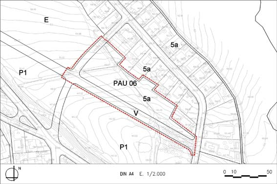

PAU 06 “Can Costa” (Polígon d’actuació urbanística PAU – 06)

Objectiu: Parcel.lació del sòl privat per a la construcció d’unihabitatges aïllats, amb cessió i urbanització del vial inclòs.
Règim del sòl: Sòl Urbà No Consolidat
| Superfície del polígon: Ordenació (plànol vinculant) Sistemes urbanístics de cessió: Viari (V) Zones edificables: Residencial aïllada unihabitatge parcel·la petita (clau 5a) |
6.546 m2s 2.194 m2s 4.352 m2s |
C.E.B.: (St) Sostre total (SH) Sostre per habitatges Nombre màxim d’habitatges: Règim HRL : (100% SH) Règim HPC: (0% SH) Règim HPO : (0% SH) Règim HP lloguer : (0% SH) |
0,4 m2st/m2s 2.618 m2st 2.618 m2st 11 hab. 11 hab. 0 hab. 0 hab. 0 hab. |